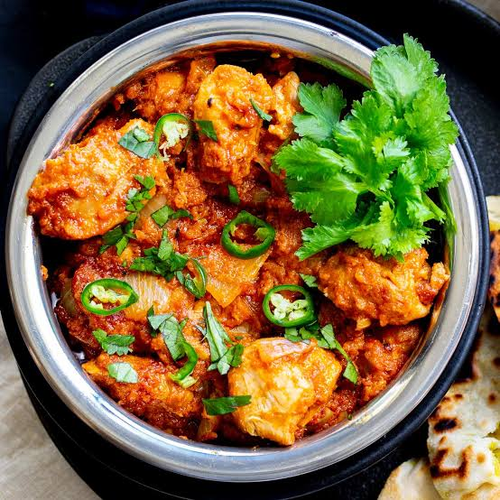

karahi Recipe

Description
Karahi is a popular Pakistani dish made with tender meat, tomatoes, green chilies,
ginger, garlic, and traditional spices cooked together in a karahi.
Ingredients
- Chicken
- Tomatoes
- Green chilies
- Ginger
- Garlic
- Cooking oil
- Red chili powder
- Garam masala
Steps
- Heat oil in a karahi and cook the chicken until lightly browned.
- Add ginger and garlic and fry for a few minutes.
- Add chopped tomatoes and cook until they become soft.
- Add red chili powder and other spices.
- Cook until the chicken is fully tender and the oil separates.
- Add green chilies and garnish with fresh ginger.
- Serve hot with naan or roti.
Home